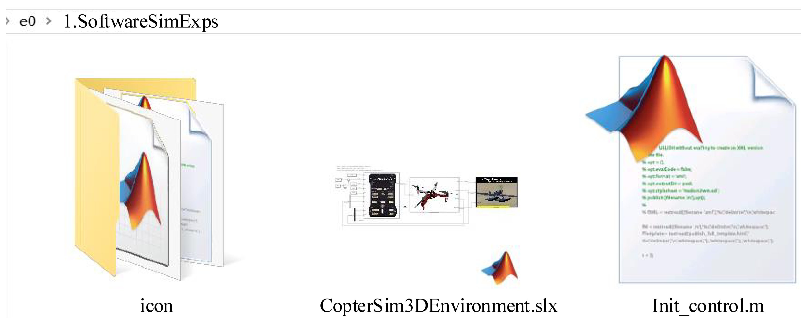
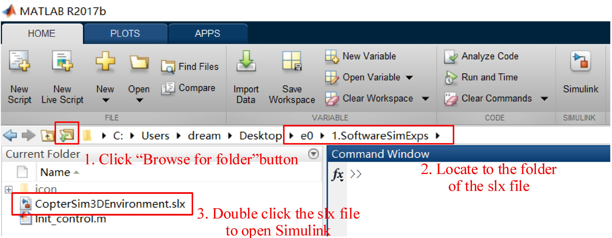
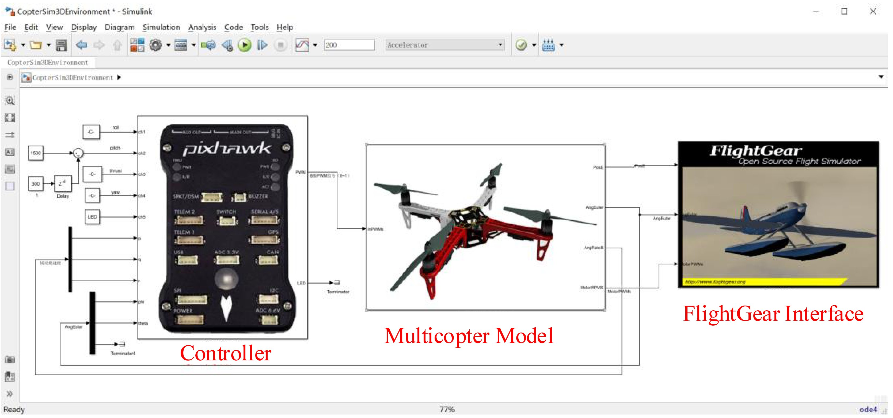
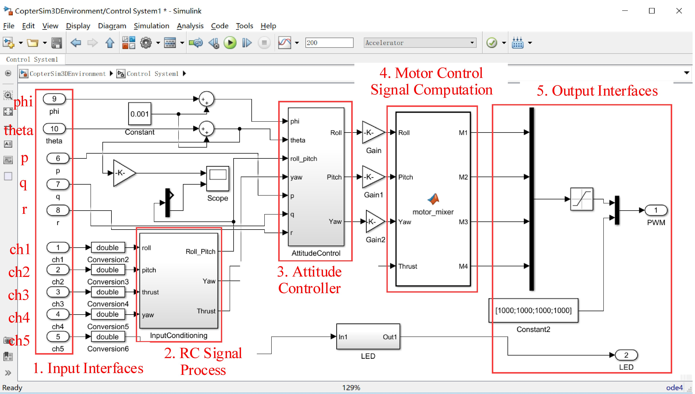
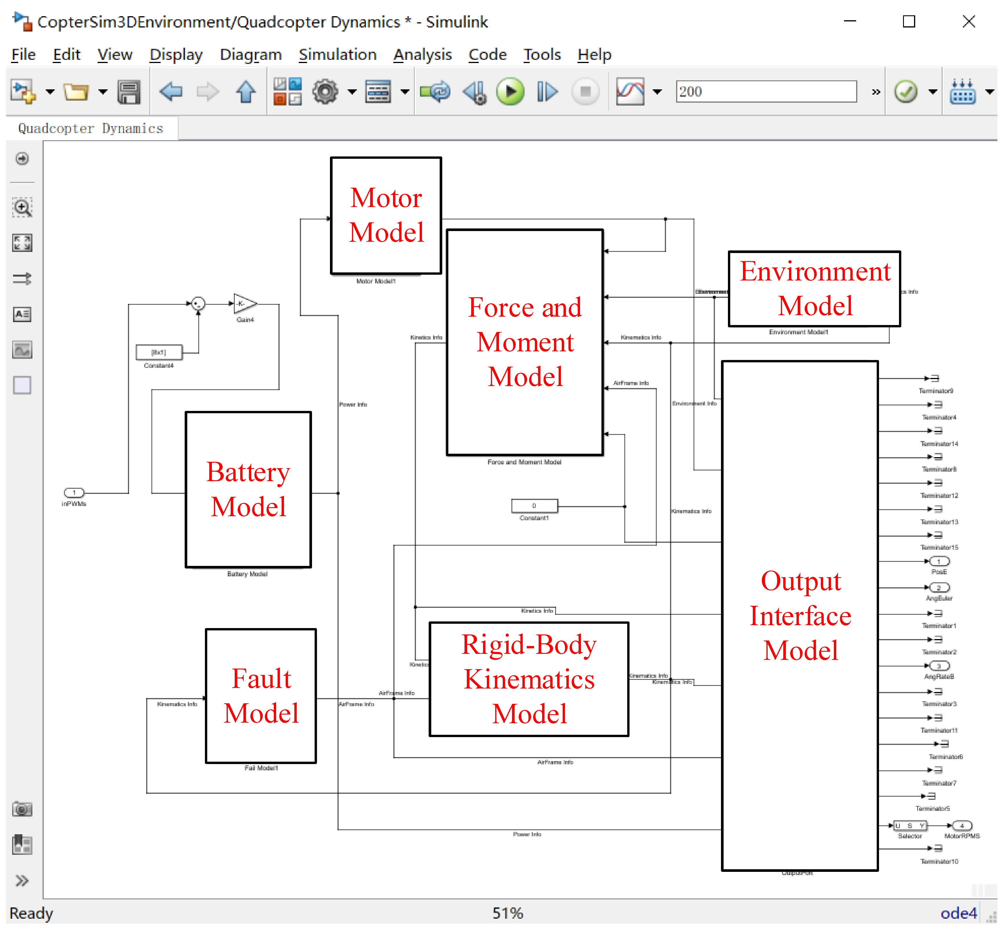
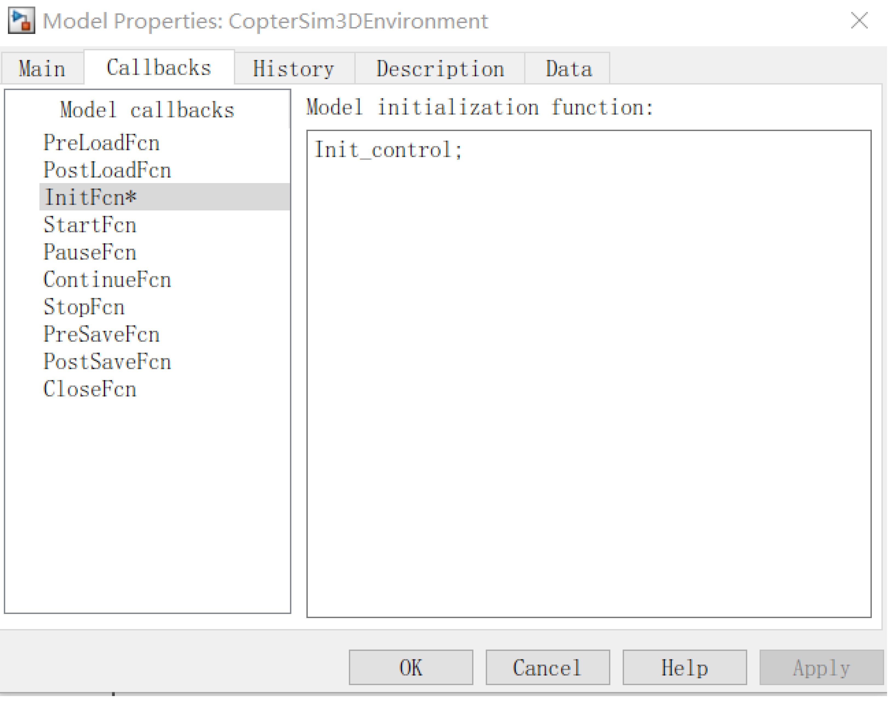
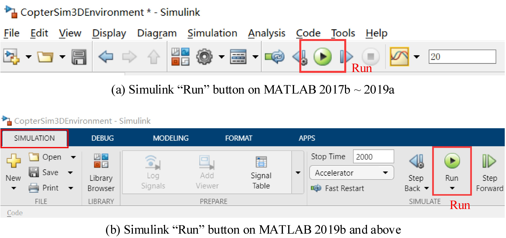
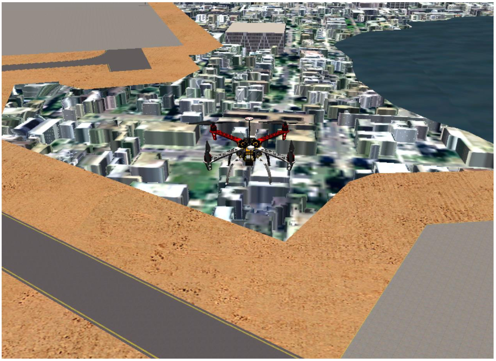

2. Simulink-Based Controller Design and Simulation Platform¶
To improve the design efficiency of multicopter controllers, as shown in Fig. 3.5, this book provides a high-fidelity simulation environment based on Simulink/FlightGear. The main source code file is presented in “e01.SoftwareSimExps CopterSim3DEnvironment.slx”.
Fig. 3.5 Files in “SoftwareSimExps” folder
The following steps describe the correct way to open Simulink files (those with the file suffix “.slx”).
(1). Open MATLAB via the Windows desktop shortcut or the Windows start menu. (2). As shown in Fig. 3.6, click the “Browse Folder” button in the MATLAB User Interface (UI) to set the current directory to the folder of the “.slx” file to be opened.
Fig. 3.6 Method to correctly open a Simulink slx file
(3). Double-click the “.slx” file in the “Current Folder” window (the lower-left side in Fig. 3.6) to open it.
All “.slx” files should be opened in this way to ensure that the working directory is correct and that the initialization scripts are successfully loaded.
Fig. 3.7 Simulink SIL simulation example
Open the “CopterSim3DEnvironment.slx” file according to the above procedure; then, a SIL simulation example will appear as shown in Fig. 3.7. The SIL simulation example contains three subsystems: the “Controller” subsystem, the “Multicopter Model” subsystem, and the “FlightGear Interface” subsystem. Their key features are summarized below.
(1). The input, output, and feedback signals of the “Controller” subsystem are consistent with the available signals in a real autopilot system. For example, the input signals of the controller in Fig. 3.7 are the control commands for pitch, roll, yaw, and altitude control from a simulated RC transmitter, and the output signals are the motor PWM signals for a multicopter model.
(2). The controller uses the sensor estimated states (e.g., attitude, angular velocity, position, velocity, and other state information) to achieve stable attitude control.
(3). The input and output signals of the “MulticopterModel” subsystem are consistent with those of a real multicopter. For example, the input signals of the “Multicopter Model” subsystem are the PWM control signals of eight motors (the multicopter model will choose the actual number of motors according to the selected model) defined by the Pixhawk autopilot (the data range is 1000–2000 corresponding to a throttle command of 0–1), and the output signals are the data from various sensors.
(4). “FlightGear Interface” subsystem provides a communication interface to send the flight data to FlightGear, where the real-time vehicle attitude and flight trajectory can be observed in a realistic 3D scene.
2.1. Controller¶
Double-click the “Controller” subsystem in Fig. 3.7 yields the internal structure of the controller, as presented in Fig. 3.8. This example shows a simple attitude controller for pitch and roll angles. The controller receives the control signals from the RC transmitter and controls the multicopter to achieve the desired pitch and roll angles.
As shown in Fig. 3.8, the 1st–5th input ports are five input channels from the RC transmitter (“ch1”–“ch5”); the 6th–8th input ports are the angular velocity (“p”, “q”, “r”) from the gyroscope sensor; the 9th–10th input ports are the roll angle and pitch angles (“phi”, “theta”) estimated from the inertial sensor. As shown in Fig. 3.8, the computing process of the entire “Controller” subsystem is roughly divided into five steps.
Fig. 3.8 Internal structure of “Controller” subsystem
(1). The “Input Interfaces” module receives the RC transmitter signals and the multicopter state estimation signals. [1]
(2). The “RC Signal Process” module maps the five-channel signals of the RC transmitter to the desired roll and pitch angle values.
(3). The “Attitude Controller” module computes the desired force and torque values to control the multicopter to the desired attitude.
(4). The “Motor Control Signal Computation” module maps the force and torque values to the control signals (ranging from 1000 to 2000) for the four motors.
(5). The “Output Interfaces” module fills the remaining 4-dimensional control signals and generates an 8-dimensional PWM signal (there are eight PWM output ports on Pixhawk) ranging from 1000 to 2000µs. [2]
2.2. Multicopter Model¶
Double-click the “Multicopter Model” subsystem in Fig. 3.7, and the internal structure of the multicopter model is presented in Fig. 3.9. The multicopter model simulates a real multicopter system to output the flight state and sensor signals based on the motor PWM controls from the control system.
Fig. 3.9 Internal structure of “Multicopter Model” subsystem
As shown in Fig. 3.9, the “Multicopter Model” subsystem contains the following seven main modules.
(1). “Motor Model” module: it simulates the motor dynamics.
(2). “Force and Moment Model” module: it simulates all external forces and moments acting on the body, such as the propeller thrust, fuselage aerodynamics, gravity, and ground supporting force.
(3). “Rigid Body Kinematics Model” module: it calculates the vehicle kinematics of the multicopter, such as speed, position, and attitude.
(4). “Environmental Model” module: it calculates the environmental data, such as gravitational acceleration, air density, wind disturbances, and geomagnetic field.
(5). “Fault Model” module: it is mainly used to inject model uncertainties (related to mass and moment of inertia) as well as faults.
(6). “Battery Model” module: it simulates the discharge process of the battery.
(7). “Output Interface Model” module: it packs the output signals in the desired format.
The controller parameters are stored in an initialization script “e01.Software SimExpsInit_control.m”. This script will be automatically called to import all parameters into the Simulink workspace when the simulation starts. Figure 3.10 depicts how to proceed to autorun the initialization script. Readers can open the UI in Fig. 3.10 by clicking “File”—“Model Properties”—“Callbacks”—“InitFcn” in the Simulink menu within the “CopterSim3DEnvironment.slx” project. The source code of the “Init_control.m” initialization script is listed in Table 3.1.
Fig. 3.10 Initialization interface for the “Init_control.m” script
All the parameters required by the “Multicopter Model” are stored in the script “e01.SoftwareSimExpsiconInit.m”. This script will be automatically called when the second line (see Table 3.1) of the “Init_control.m” script is executed. The key model parameters are listed in Tables 3.2, 3.3, 3.4, 3.5, and 3.6. By modifying the above model parameters, multicopters with different sizes and configurations (see Table 3.5) can be obtained, and flight simulations under different environments (see Table 3.6) can be performed.
2.3. FlightGear Interface¶
As shown in Fig. 3.7, the “FlightGear Interface” subsystem has three input ports representing the multicopter position, Euler angles, and motor PWM signals, respectively. This subsystem sends multicopter flight state information to FlightGear to observe the flight attitude and trajectory of the multicopter in a 3D scene. The steps to follow are described next.
(1). Double-click the FlightGear-F450 shortcut on the desktop to open FlightGear;
(2). Click the “Run” button on the Simulink toolbar (see Fig. 3.11) to run the “CopterSim3DEnvironment.slx” file;
Fig. 3.11 Simulink “Run” button for different MATLAB versions
(3). Then, as shown in Fig. 3.12, the multicopter takes off vertically from the ground and starts flying forward at a certain pitch angle after 5 s.
Fig. 3.12 A quadcopter in FlightGear
Notes
| [1] | In a real autopilot system, these signals should be obtained from the modules related to state estimation (e.g., raw sensor data, Kalman filter, and complementary filter). For simplicity, in the controller design during the SIL simulation the true values of the multicopter model can be used first. |
| [2] | A value within the range from 1000 to 2000 corresponds to a higher level duration (in microseconds) of PWM signals. Given that the period of an RC PWM signal is usually 20 ms (50 Hz), the duty ratio of the PWM signal measured by a multimeter usually ranges from 0.05 to 0.1 instead of from 0 to 1. |